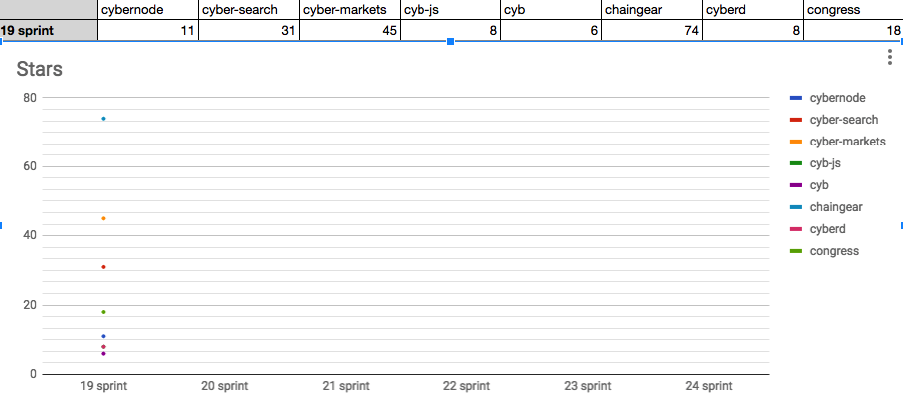
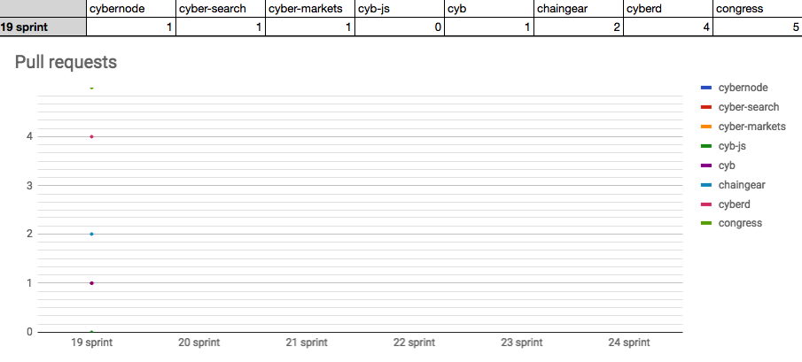
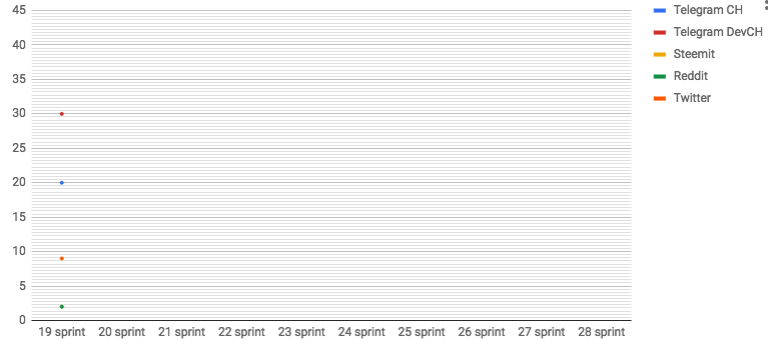

The awaking of cyber•Congress
by savetheales on 2018-09-20
 Start: 2018-09-17
Start: 2018-09-17
End: 2018-09-28
Сonclusion
Here is our first sprint report. We have a great reboot at our trip to Iceland in August 2018 and now we ready to new challenges. For this block we decide to focus on development our cyb, cyberd and chaingear projects. As result for this sprint we have first web3 browser release and first PoC of cyberd. We look forward for your feedback and feature request and bug issues. :)
Changelog
- #### First PoC of cyberd
- #### First release of Cyb
Developers metrics
Epics done:
Epics next sprint TODO:
- IPFS integration #40 in cyb
- Cyb navigation #41
- Whitepaper 0.3 #25 of cyb
- Create cyberd PoC based on Cosmos SDK #37
| Burndown | Storypoints done |
|---|---|
 |
92 |
| Stars | Forks | PRs |
|---|---|---|
|  |  |
 |
KPI’s
- cyberd: 1 of the 7 PoC iteration;
- cyb: yes release;
- chaingear: 0 of 100 ETH take from chaingear;
- #23 organization on gitcoin.co as at 2018/10/01;
- 30 of 1000 devs in devChat.
Community:
- Telegram channel: 20 subscribers;
- Telegram devChat: 30 subscribers;
- Steemit: 2 subscribers;
- Reddit: 2 subscribers;
- Twitter: 9 subscribers;
